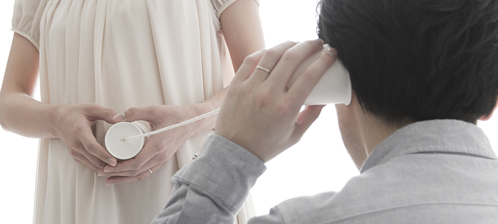
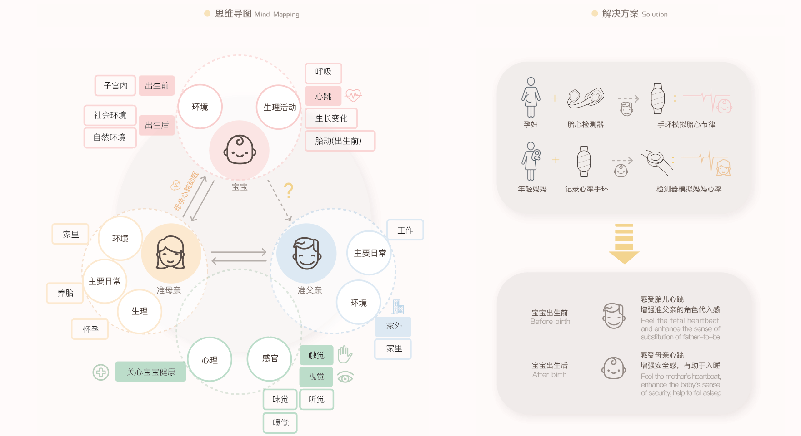
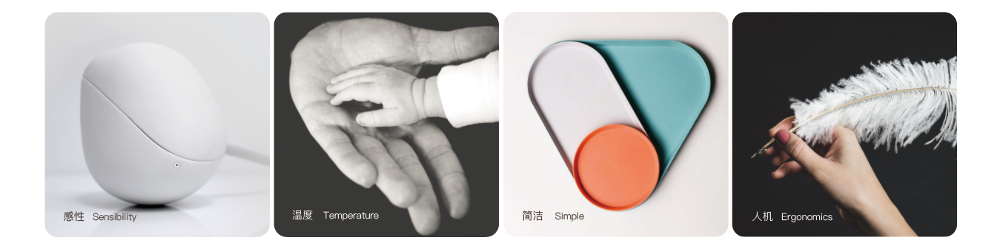
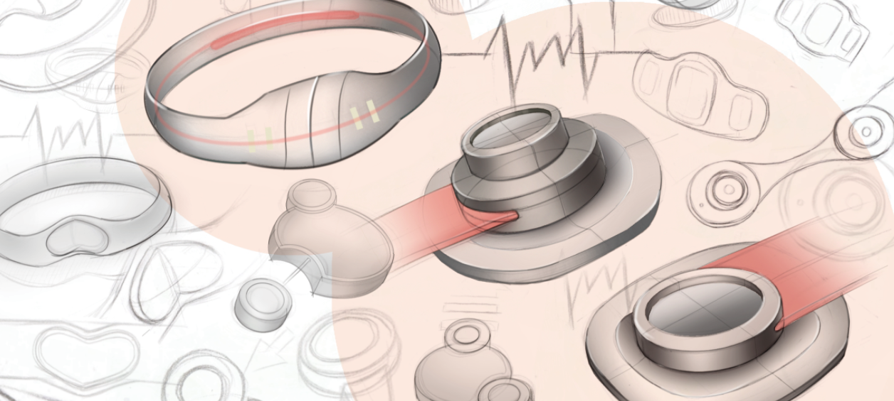
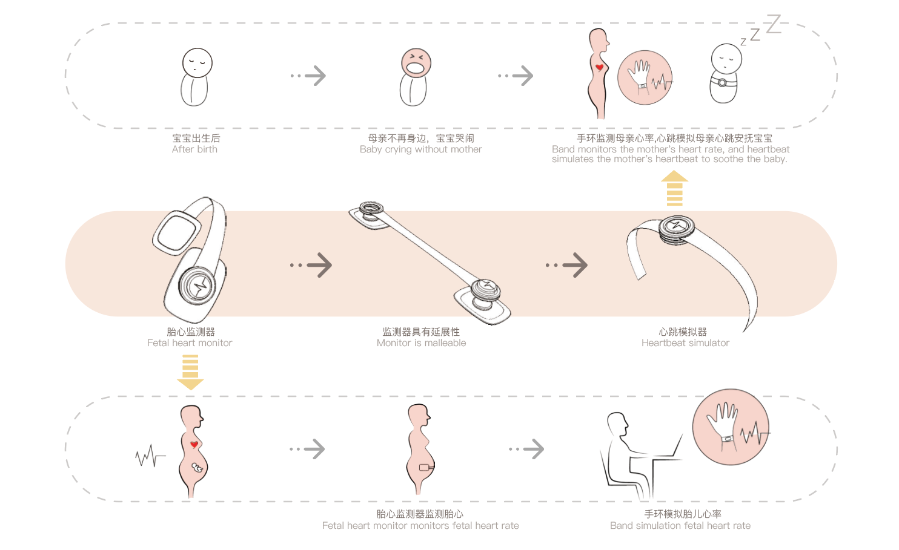
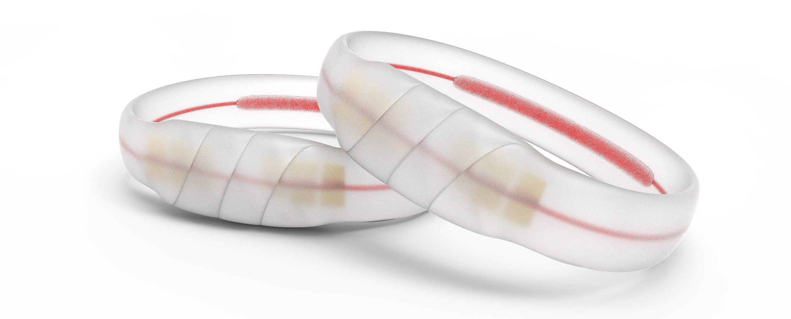
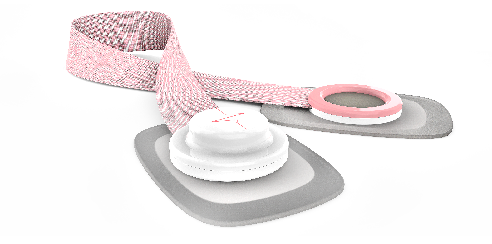

Angle Beats
Angle Beats是围绕胎心的设计，可分为胎心监测器和手环。在母亲怀孕前期戴上胎心监测器，父亲可通过手环模拟并感受胎儿心率，以增强父亲的角色带入感。
在婴儿出生后，胎心检测器可以延展成心跳模拟器，模拟母亲心跳，从而达到安抚宝宝的目的。
设计背景
心跳是生命的特征。当妻子怀孕时，准父亲不能像妻子那样直接感受新生命，且常忙于工作，只能偶尔空闲时贴近妻子肚子听听胎儿心跳。这让准父亲缺少父亲这一角色的代入感。
胎儿在子宫时，在妈妈肚子里的环境很安全舒适，且每天听到得最多的就是妈妈有节奏的心跳声。当他出生后，环境改变了，一切变得陌生且缺少安全感。所以若再次听到类似的母亲心跳声，就形成了条件反射，觉得很舒适安全，很容易就入睡。

思维发散＆设计定位

目标品质

草图绘制

功能说明

效果图
 